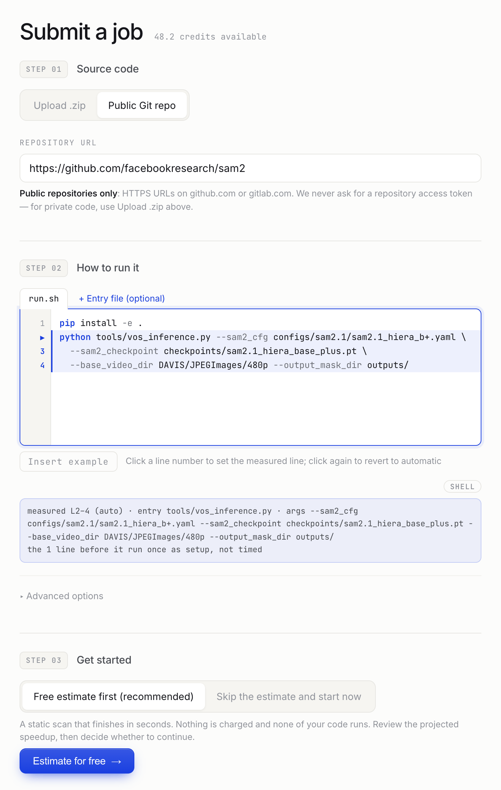
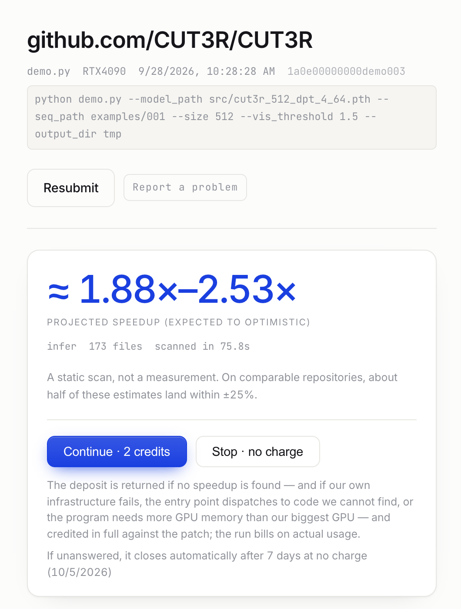
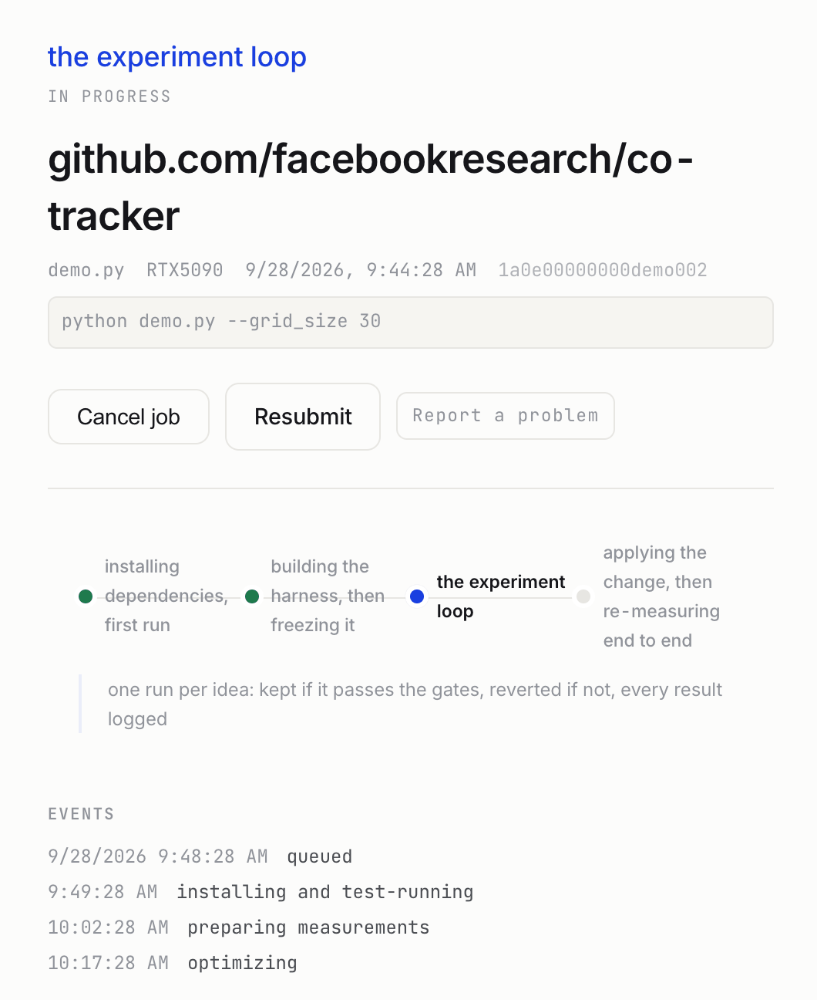
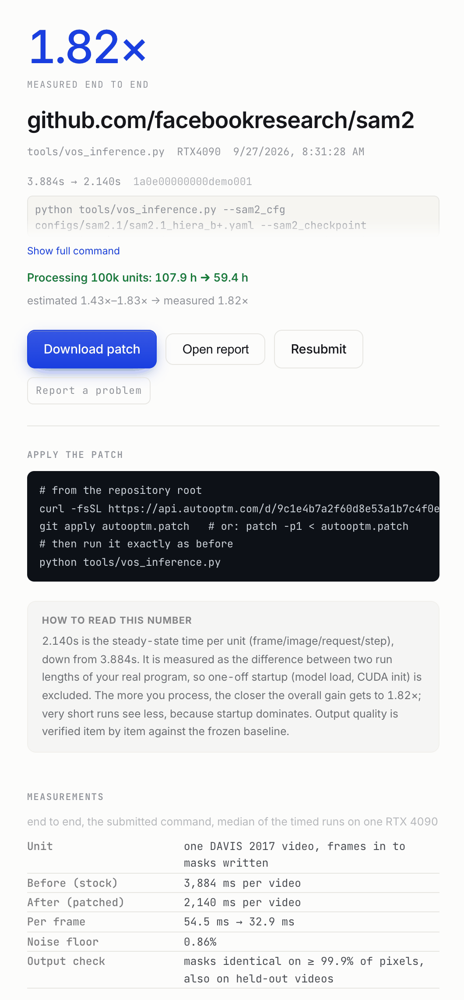
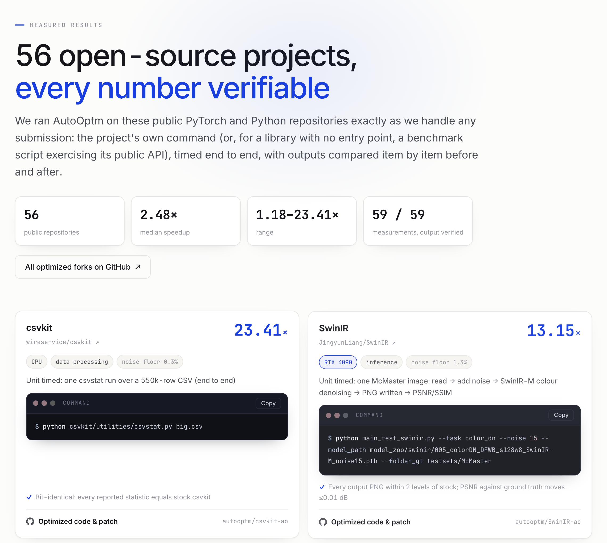

PyTorch · Python · 自动性能优化PyTorch · Python · automated performance optimization
让你的代码
更快一点Make your code
run faster
交给我们一个仓库或代码 zip 包，还你一个补丁。Point it at a repo or upload a zip. Get back a patch.
首次试跑免费，先看实测加速比，满意再付费解锁补丁 · 私有代码？Your first run is free. See the measured speedup on your code; pay only to unlock the patch · Private code? 上传 zip 包Upload a zip
怎么用How it works
四步，从代码到补丁Four steps from your code to a patch
- 01
把代码交给我们：Git 仓库或 zip 包，加上你平时运行的那条命令，训练、推理或数据处理都可以。You give us your code — a Git repository or a zip — and the command you already run: training, inference or data processing.
- 02
我们在真实的 GPU 或 CPU 上运行它，先测原版程序，再做优化。We run it on a real GPU or CPU, measure the stock program, and optimize it.
- 03
加速在你自己的程序里端到端确认，输出逐项和原版比对。The speedup is confirmed end to end, in your own program, and the output is checked against the stock one.
- 04
你拿到一个可以直接
git apply的补丁。没变快，不收费。You get a patch you cangit apply. No speedup, no charge.
公开项目实测 · 端到端 · 输出已校验Measured on public projects · end to end · output verified
每个结果都是一个可以复现的 forkEvery result is a fork you can reproduce
SwinIR
图像超分辨率image super-resolution 8.56×CLIP
图文嵌入image–text embeddings 5.22×DINOv2
自监督视觉特征self-supervised vision features 3.75×Sapiens
人体姿态估计human pose estimation 3.42×3D Gaussian Splatting
三维重建（训练）3D reconstruction (training) 3.35×Real-ESRGAN
图像与视频放大image and video upscaling 2.23×YOLOv12
目标检测object detection 1.82×SAM 2
视频目标分割video object segmentation查看全部 56 个项目See all 56 projects → · GitHub 上的全部 forkAll forks on GitHub →
产品一览Product tour
从提交到补丁From submit to patch





截图使用演示数据，不含任何真实账户。Screenshots use demo data; no real account is shown.
先看看你的代码能快多少See how much faster your code can run
估算免费，几秒出结果。看过预估加速比，再决定要不要继续。The estimate is free and ready in seconds. See the projected speedup first, then decide whether to continue.